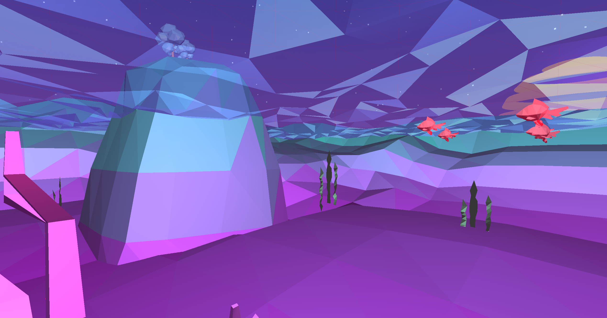
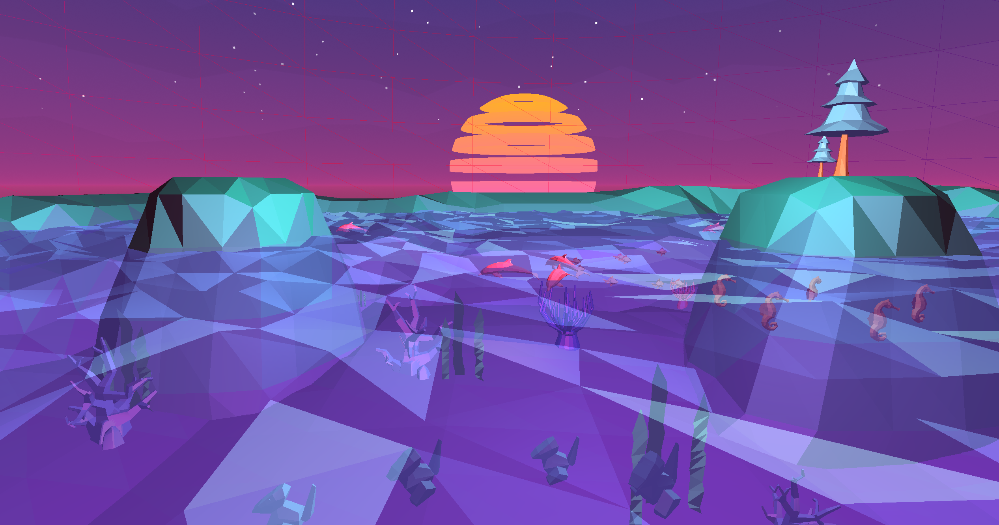

DOLPHIN FRIENDS
Intro to Graphics Final Project | Jan 2020

Dolphin Friends is a low-poly dolphin “hide-and-seek” game made using C++ and OpenGL for CPE 471, Intro Graphics. The goal of the game is to find all of the dolphins in the least amount of time, and the dolphins follow you after you find them. Every time you collect a dolphin, they follow you, with collision detections on each other and the islands. Look underwater to find fish boids swimming around and other underwater fun!

Writing these shaders were a lot of fun, and it was my first time learning about and writing vert and frag shaders in glsl. I used Blinn-Phong shading texture mapping for the dolphins (they have white bellies), skybox, and GUI.

For the water shader, I basically distorted all of the vertices of a flat plane in the vertex shader using sin and cos functions. However, I got to the problem where I had to update the normals after the vertices moved, so every vertex needed to know about the location of the other 2 vertices in the triangle. I passed in the positions of all vertices in the triangle into the vertex shader to do the calculations and went for a crystal water vibe.
The anemone picks two random colors and blends between them, and the coral blends between blue and purple. The seaweed actually uses the same shader as the water.

I basically organized my data similar to a very simple version of Unity GameObjects, where everything was a GameObject with a mesh, rigidbody, and transform. The RigidBody kept track of the velocity, acceleration, friction, and does the physics updating. Rigidbodies also kept track of the bounds of each item for collisions, but I ended up just using sphere colliders for collision calculations.
Boids consist of red fish, seahorses, and my favorite fish, porygon. Velocity of each boid is based on the cohesion, alignment, and separation vectors. They have basic collision detection so that they don’t go out of the map and don’t go into the islands. The dolphins work very similar to the boids, except they only follow the player instead of each other.